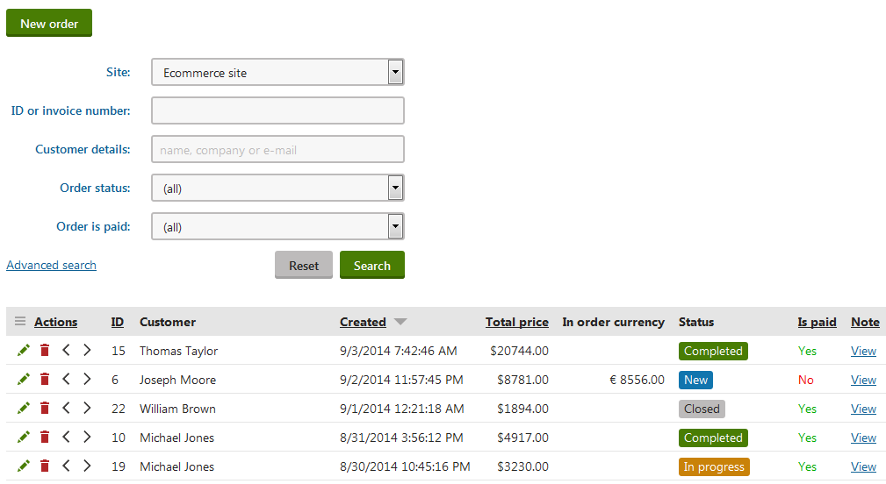

Orders
In the Kentico E-commerce Solution, orders of products can be placed by both registered and anonymous customers.
Various types of discount such as product coupons, catalog discounts, order discounts, volume discounts, and free shipping offers can be applied (to whole orders or selected order items) to further motivate the purchasers and therefore boost your sales.
The system allows you to define multiple shipping options and payment methods. The checkout process in Kentico is also fully customizable.
Additionally, you can track the life cycle of your store's orders through customizable order statuses.
Managing orders
The usual scenario is that your customers, both registered and anonymous, place their orders on the live site while going through the checkout process. Registered customers can also view their orders on the live site.
Moreover, the system allows your on-line store administrators to create orders for the customers directly in a dedicated part of the administration interface. Here the administrators can also modify the properties of, and remove any selected order.
To manage orders in the administration interface:
Open the Orders application.
Perform the required action.
You can add new orders, and modify or remove existing ones.
Save your work.
You can perform the Move to the previous status ( ) and Move to the next status (
) and Move to the next status ( ) actions to manually change the status of a selected order as required, for example Payment received, Completed, etc.
) actions to manually change the status of a selected order as required, for example Payment received, Completed, etc.

Managing orders
Recalculating orders
The system allows your on-line store administrators to modify orders placed by your customers. After changing values of selected order properties (while editing a selected order), the order is recalculated.
The system recalculates orders after:
changing the shipping option (Shipping tab)
adding product items (Items tab)
changing the number of ordered product items (Items tab)
removing product items (Items tab)
adding or removing a coupon code (Items tab)
The system does not recalculate orders after modifying the billing address or shipping address, changing the order status, changing the payment method, etc.
To get the system to recalculate your customers' orders:
Open the Orders application.
Edit (
 ) a selected order on the respective tab.
) a selected order on the respective tab.Modify order properties as required.
Click Save (OK on the Items tab).
The system saves the order with recalculated values.
Important
The system does NOT update the Unit price of order items when recalculating orders (to preserve the original unit price calculated when the customer made the order). If you make an order change that affects the unit price of an item (due to catalog or volume discounts), you need to edit the given item's unit price manually for the order (see Modifying order items).
For example, if you increase the number of ordered units to an amount that fulfills the conditions of a volume discount and Update the order, the system does not automatically reduce the unit price. If you wish to reduce the item's price, you need to edit the given order item on the Items tab, set the reduced Unit price according to the given volume discount, click Save & Close and then click OK.
Discount validity
When recalculating existing orders, the system evaluates the validity of discounts using the date and time when the order was created, not the current time. Expired discounts remain valid when recalculating orders that were created before the discount's Valid to date.
However, if a discount was manually disabled or deleted, the system removes it from orders during the recalculation.
Capturing payments
With some payment methods, the initial payment done by the customer only performs authorization (places a hold on the transaction amount), without actually transferring funds. The merchant finishes the transaction at a later time by capturing the payment, typically after the ordered products are physically shipped.
For example, the default PayPal and Authorize.Net payment gateways can be configured to use delayed capture transactions.
To capture the payment for an order:
Note: Capturing of funds is only possible for orders with a successfully authorized payment (that has not expired or already been completed).
Open the Orders application.
Edit the appropriate order.
Switch to the Billing tab.
Click Capture payment.
If the capture transaction is successful, the given payment gateway handles the transfer (settlement) of the authorized funds. The order is then marked as paid in Kentico.
Marking orders as paid
The system can automatically mark orders as paid after the orders are moved to a selected order status. For example, to the Payment received order status when the customers make their payments through a payment gateway (automatic order status change), or when your on-line store administrators change the status of existing orders in the administration interface (manual order status change).
You can also mark orders as paid directly in the administration interface while editing the orders on the Billing tab:
Open the Orders application.
Edit (
) a selected order.Switch to the Billing tab.
Enable the Order is paid property.
Click Save.
If an order is marked as paid:
the system sends to specified email addresses notification emails informing about receiving payment
purchased memberships become activated
expiration of purchased e-products starts
store administrators cannot add product items (Items tab)
store administrators cannot perform the Update action (Items tab)
store administrators cannot change the shipping option (Shipping tab)
store administrators cannot change the payment method (Billing tab)
To be able to modify the disabled order properties, you need to disable the Order is paid property for the order.
With the Order is paid property enabled, you can still modify order addresses (Shipping tab and Billing tab), order tracking number (Shipping tab), and order note (Shipping tab). You can also change order status (General tab).
If orders are marked as paid immediately upon creation, check whether the first order status (the top status in the Store configuration -> Order status) marks orders as paid.
If it is the case, clear the Mark order as paid field while editing the first order status, or create a new order status that does not mark the order as paid and move it to the top of the order statuses list.
Changing order statuses
You can configure the system to change the status of your customers' orders automatically. For example, the system sets up a selected order status on placing new orders, after making payments through payment gateways, etc.
Your on-line store administrators can also change the status of existing orders directly in the administration interface:
Open the Orders application.
Edit (
) a selected order.The system opens the order on the General tab.
Select an order status as required.
Click Save.
The system saves the order with the selected status.
If you switch to the History tab, you can view the order's all order status changes.
Modifying order items
To modify items in an existing order:
Open the Orders application.
Edit (
) a selected order.Switch to the Items tab.
Here you can add new order items, change the number of ordered items, and remove order items.
Notes
You cannot edit items for orders that are marked as paid.
If you manually edit the Unit price of an order item, the system clears all catalog discounts applied to the given item.
If the Send order changes by email option is enabled, the system sends a notification email informing about the changes made in the order to relevant addresses (typically to the customer and to the merchant).
Click OK.
If you now generate an invoice for the order (Invoice tab), it contains the updated set of items.
Returning product items to the inventory
If you lower the number of product items in an existing order, the system can increase the number of product items in stock.
To return the products to stock, you need to fulfill ALL of the following conditions:
Tracking inventory for the changed product is enabled. That is, the product needs to have the Track inventory check box selected when editing the product details.
You do not remove the whole order but remove the product items inside the order as described above in this section.
If you click Empty, the listed product items are removed from the order all at once. You can also remove only selected product items from the order. To do so, select product items and click Update.
The order has never been labeled as paid. That is, the Order is paid check box on the Billing tab has never been selected in the modified order.
Modifying order addresses
The system allows your customers to specify a different address for billing and for shipping (if the shipping address is different from the billing address). Otherwise, the billing address is used as the shipping address.
To modify order addresses:
Open the Orders application.
Edit (
) a selected order.Switch to the Billing tab.
Click Edit.
This opens the Edit address properties dialog.
Change address details as required.
Click Save.
The system saves the updated address and closes the dialog.
(Optional) Switch to the Shipping tab and repeat steps 3. through 5. to edit the shipping address.
If you now generate an invoice for the order (Invoice tab), it contains the updated address.